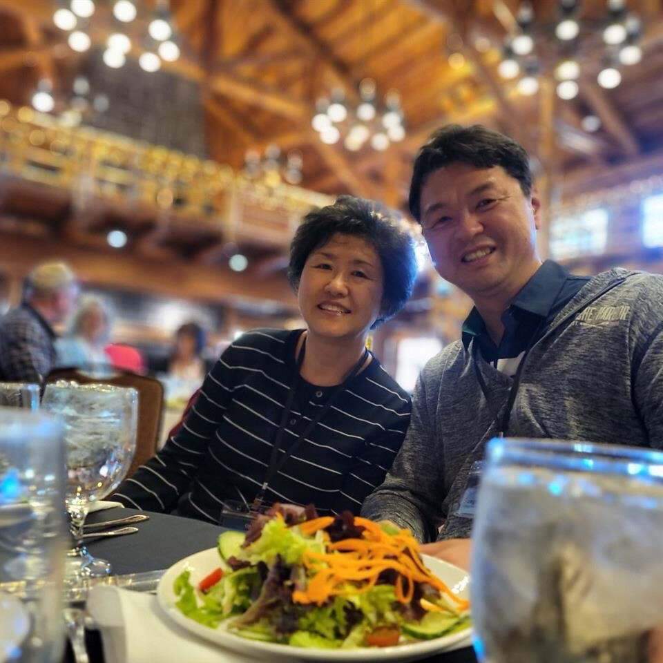
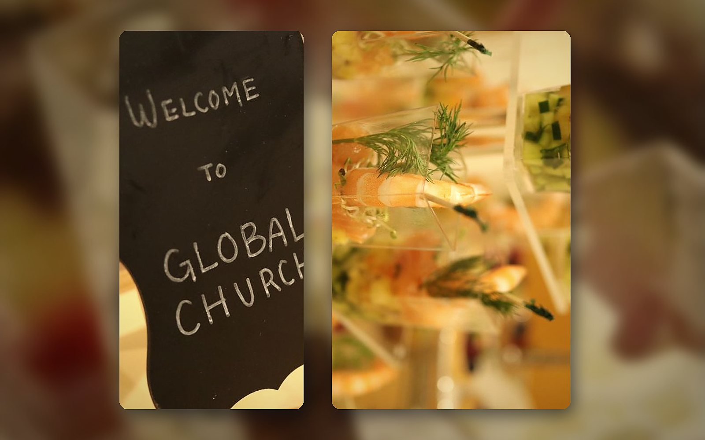
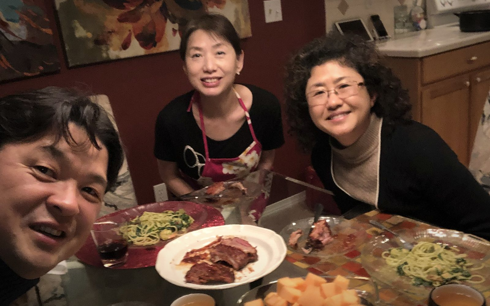
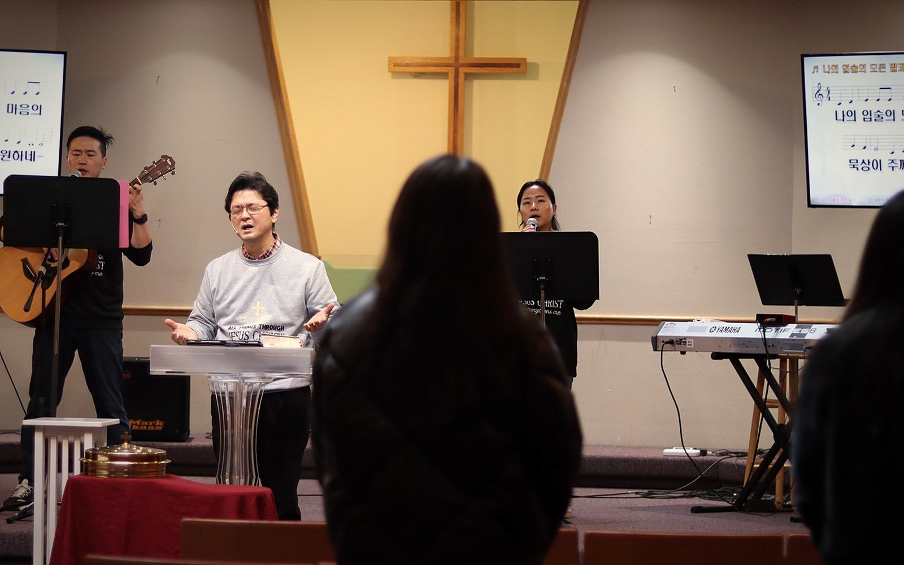
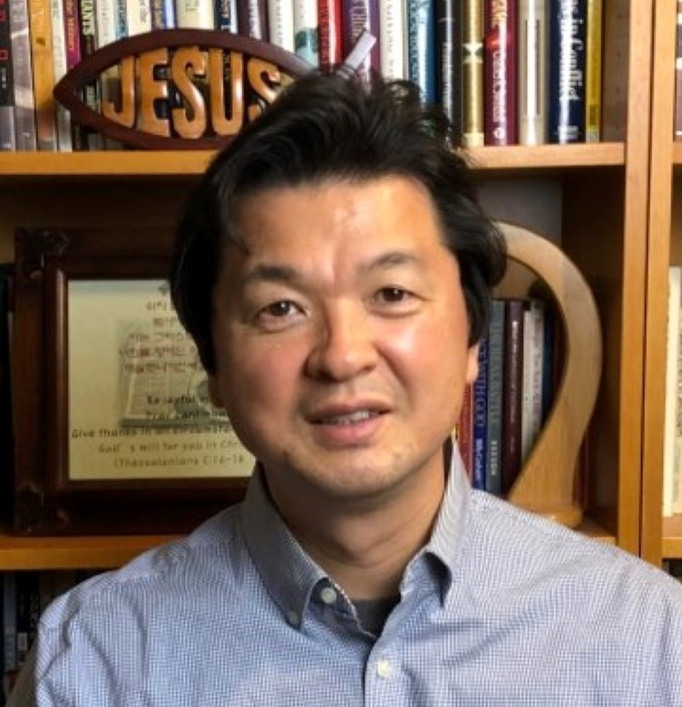
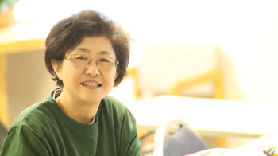
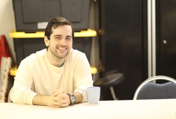
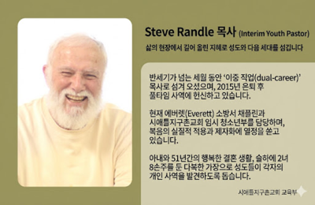

건물이 아니라 집, 신약교회의 원형 그대로.
식탁 교제로 시작해요.Not a building but a home — the New Testament church.
It starts at the table.
우리의 모든 것이 이 한 사명에서 나옵니다. 프로그램이 아니라, 한 사람이 예수를 만나고 제자로 자라 또 한 사람을 품는 것 — 그것이 교회입니다.Everything we do flows from this one mission. Not programs, but one person meeting Jesus, growing as a disciple, and carrying another — that is the church.
복잡하게 만들지 않습니다. 단순한 이해, 단순한 순종. 성경이 말한 대로 믿고, 말한 대로 살아가려 합니다. 유행이나 프로그램이 아니라, 2,000년 전 초대교회가 걸었던 그 길 그대로예요.We keep it simple — simple understanding, simple obedience. We believe what the Bible says and try to live it out, walking the same path the first church walked 2,000 years ago.
“너는 눈을 들어, 네가 서 있는 곳에서 동서남북을 바라보아라.” (창세기 13:14, 새번역) — 시애틀에서 지구촌 땅 끝까지, 한 가정에서부터 하나님 나라가 동서남북으로 번져갑니다. 어디든 세 가정이 목장으로 모이면, 담임목사가 찾아가 함께 교회를 세워갑니다. (행 1:8)“Lift up your eyes, and look from the place where you are, northward and southward and eastward and westward.” (Genesis 13:14) — From Seattle to the ends of the earth, God's kingdom spreads in every direction, one home at a time. Wherever three families gather as a mokjang, our pastor will come to help plant a church. (Acts 1:8)

거창한 준비도, 조건도 없어요. 밥 한 끼에서 시작해 삶을 나누는 가족이 되는 것 — 그거면 충분합니다.No preparation, no conditions. It starts with a shared meal and becomes a family who shares life — that's enough.
믿음과 상관없이 밥 한 끼로 편하게 — 누구라도 환영해요.A shared meal, no faith required — everyone welcome.
삶을 나누는 작은 가족(목장)이 생겨요. 혼자 신앙생활 하지 않아도 됩니다.A small family (mokjang) to share life with — you don't have to walk alone.
흩어진 가정이 한 회중으로 모여 함께 예배해요. 서두르지 않아도 됩니다 — 편히 쉬어 가세요.Scattered homes gather as one to worship. No rush — come and rest with us.
무엇을 하라고 하지 않아요. 그저 와서 함께 밥 먹고, 함께 쉬고, 함께 걸으면 됩니다. 그 걸음이 이어지는 길은, 준비되셨을 때 천천히 안내해 드릴게요.Nothing is asked of you. Just come — eat, rest, and walk with us. Where that path leads, we'll share gently, when you're ready.

반갑습니다. 시애틀지구촌교회 김성수 목사입니다.
우리 교회는 2002년에 시작해, 이제는 큰 예배당 대신 집과 집에서 모이는 신약교회의 원형으로 새롭게 세워가고 있습니다. 화려한 프로그램보다, 한 밥상에 둘러앉아 서로의 삶을 나누고 예수님을 만나는 것 — 그것이 교회라 믿습니다.
믿음이 있든 없든, 어디에 계시든 밥 한 끼로 편하게 시작하세요. 시애틀에서 지구촌 땅 끝까지, 한 가정에서부터 하나님 나라가 확장됩니다. 당신을 위한 자리가 이미 마련되어 있습니다. 잘 오셨어요.
Hello — I'm Pastor Sung Soo Kim of GMC of Greater Seattle.
Our church began in 2002, and now — instead of a large sanctuary — we're being rebuilt as the New Testament church that gathers home to home. More than polished programs, we believe the church is people around one table, sharing life and meeting Jesus.
Believer or not, wherever you are, start simply — with a shared meal. From Seattle to the ends of the earth, God's kingdom spreads from one home. A place is already set for you. So glad you're here.
예배당을 찾지 않으셔도 됩니다. 한 가정의 밥상에 앉는 것으로 시작하고, 그 자리에서 자연스럽게 함께 걷게 됩니다. 아무것도 준비하지 않으셔도 돼요.You don't need to find a sanctuary. It starts by sitting at one family's table — and from there, we simply walk together. Nothing to prepare.



풍성한 밥상 공동체로 당신을 초대합니다.You're invited to a rich table-fellowship.
우리, 행복할까요? — 치유와 상담, 배움의 자리를 이웃으로 함께 나눕니다.Shall we be happy, together? — healing, counseling and learning, shared as neighbours.
영어가 필요한 이웃과 마주 앉아 편하게 이야기.Just conversation with neighbours who need English.
부부가 다시 웃고 가정이 회복되도록 함께.So marriages smile and homes heal.
지친 마음, 상처와 아픔에서 함께 회복으로.From weariness and wounds toward healing.
서로를 다시 이해하고, 자녀를 지혜롭게.Understand each other; raise kids wisely.
진로·결정·삶의 방향, 함께 정리해요.Sort out direction and next steps, together.
어린이·청소년, 아이와 함께 오셔도 좋아요.Children & youth — bring your kids along.
믿음과 상관없이, 누구나 편하게 — 문의: info@ijiguchon.orgEveryone welcome, believer or not — info@ijiguchon.org
아이와 함께 오셔도 좋아요. 우리 아이들은 '다음'이 아니라 지금 우리 곁에서 자라는 소중한 한 영혼입니다. 믿음도 정체성도, 온 교회가 함께 키웁니다.Bring your children along. Our children aren't "next" — they are precious souls growing right now, among us. The whole church raises them together — in faith and identity.
새로 태어난 한 생명을 온 교회가 함께 축복하고 품습니다.The whole church blesses and embraces each new life.
미술과 성경으로 키우는 새 세대. 24년간 아이들을 사랑으로 가르쳐 온 김지영 디렉터와 함께.Growing a new generation through Bible and art, with Director Joy Kim — 24 years of loving, teaching children.
청소년의 눈높이에서, 미디어와 문화로 함께 걷는 Garrett Woods 목사와 함께.Meeting teens on their level — through media and culture — with Pastor Garrett Woods.
어린이는 주일 성인예배와 같은 곳에서, 청소년은 따로 또 같이 모입니다 · 문의: info@ijiguchon.orgChildren meet where adults worship; youth gather separately · info@ijiguchon.org
2,000년 전 초대교회의 원형 그대로 — 흩어져 모이고, 한 밥상에서 하나가 됩니다.Just like the first church 2,000 years ago — we scatter to gather, and become one at one table.

지구촌 어디서든 온라인으로 함께하실 수 있어요. 서두르지 않으셔도 됩니다 — 오늘은 그냥 가족 곁에 앉는 것으로 충분합니다. 모임 장소 문의는 info@ijiguchon.orgJoin online from anywhere in the world. No need to hurry — today, simply sitting with family is enough. For gathering locations, contact info@ijiguchon.org
교회가 처음이든, 도시가 처음이든 — 편하게 손 내밀어 주세요.New to church, or new to the city — just reach out.
아무것도 준비하지 않으셔도 됩니다. 한마디 남겨 주시면, 가까운 가정(목장)과 연결해 드리고 첫 자리를 편안하게 안내해 드려요. 예배는 온라인으로도 함께 드릴 수 있어요.Nothing to prepare. Leave us a note and we'll connect you with a nearby home (mokjang) and make your first visit easy. You can also join worship online.
목장과 연결되기Connect with a house church낯선 도시의 첫날은 막막하죠. 우리와 협력하는 글로벌 환대 플랫폼 HebronGuide 시애틀이 정착(주거·생활·행정 등)에 실질적인 도움을 드립니다. 도시의 첫 얼굴이 되어 드릴게요.The first days in a new city can feel overwhelming. HebronGuide Seattle, our partner global hospitality platform, gives real help with settling in (housing, daily life, paperwork). We'll be the city's first friendly face.
HebronGuide 시애틀 열기Open HebronGuide Seattle한 번 와서 밥만 드시고 가셔도 좋아요. 마음이 가는 목장을 고르고 연락처를 남겨 주시면, 그 목자가 반갑게 안내해 드립니다.Come once, just for dinner. Choose a house church, leave your contact, and the host will warmly reach out.
주일연합예배를 온라인으로 함께 드립니다 — 지켜보는 방송이 아니라, 각자의 자리에서 함께 드리는 예배예요. 설교는 10분 요약 영상으로도 나눕니다. 지금은 사도행전을 한 걸음씩 걷고 있어요.We worship together online — not a broadcast to watch, but worship shared from wherever you are. Each message is also posted as a 10-minute summary. We're walking through the book of Acts.
지쳐 쓰러진 엘리야에게 하나님은 먼저 따뜻한 떡 한 덩이와 물 한 병을 곁에 두셨습니다. 위로가 필요한 날, 아무것도 묻지 않는 밥상이 여기 있습니다. 그냥 오셔서 드세요 — 이야기는 언제든, 원하실 때만.When Elijah collapsed in exhaustion, God first set warm bread and water beside him. On the days you need comfort, there is a table here that asks nothing of you. Just come and eat — we can talk whenever you're ready.
지구촌 어디에 계셔도 시애틀지구촌교회의 등록교인으로 함께할 수 있어요. 등록하시면 이 모든 것을 누리십니다.Wherever you are in the world, you can belong as a registered member — and receive all of this.
시애틀지구촌교회는 등록교인 → 회원교인으로 함께 자랍니다. 등록교인은 위 모든 것을 누리고, 회원교인은 생명의 삶 성경공부를 이수해야 합니다.We grow together from registered member → covenant member. Registered members enjoy all of the above; covenant members complete the Living Life Bible Study.
중보기도가 필요하세요? 지금 기도 요청하기 →Need prayer? Send a request →
입력하신 이메일로 안내를 보내드렸어요. 곧 반갑게 연락드리겠습니다.We've sent a note to your email — we'll be in touch soon.
직분은 자리가 아니라 자라온 열매입니다. 예수님처럼 섬기려 애쓰는 사람들이에요 (막 10:45).Titles here are fruit that has grown, not rank — people learning to serve as Jesus did (Mark 10:45).

설교·교육·코칭. 시애틀지구촌교회를 개척한 후 성경적 가정교회를 세워갑니다.Preaching, teaching & coaching. Planted GMC and builds house churches "by the Bible."

개척 때부터 24년, 아이들을 미술과 신학으로 엮어 새 세대를 키웁니다.A beloved Bible teacher for kids for 24 years, weaving art and theology for a new generation.

필름메이커 목사. 미디어로 청소년의 눈높이에서 복음을 전합니다.A filmmaker-pastor sharing the gospel with youth through media, on their level.

소방서 채플린이자 시니어 성경교사. 이중문화 가정을 따뜻하게 상담·섬깁니다.A firehouse chaplain and senior Bible teacher who warmly serves bicultural families.
교역자·사역 문의는 info@ijiguchon.org로 편하게 연락 주세요.For ministry questions, reach us at info@ijiguchon.org.
드리는 모든 것은 한 영혼을 살리고 제자를 세우는 이 사명에 쓰입니다. 두 가지 방법 중 편한 대로 하시면 돼요. 처음 오신 분은 부담 갖지 마시고, 편히 함께해 주세요.Every gift serves this one mission — winning souls and making disciples. Give whichever way is easy for you. First-time guests, please feel no pressure — just enjoy being with us.
주일 연합예배 중 봉헌 시간에 헌금함으로 직접 드릴 수 있어요.During Sunday united worship, you can give in person at the offering time.
언제 어디서나 안전하게. 한 번 또는 매주 자동(정기) 헌금도 설정할 수 있어요.Securely, anytime, anywhere — give once or set up recurring giving.
온라인 헌금하기Give online헌금 문의: info@ijiguchon.org · 안전한 결제는 Tithe.ly로 처리됩니다.Questions: info@ijiguchon.org · Secure payments by Tithe.ly.